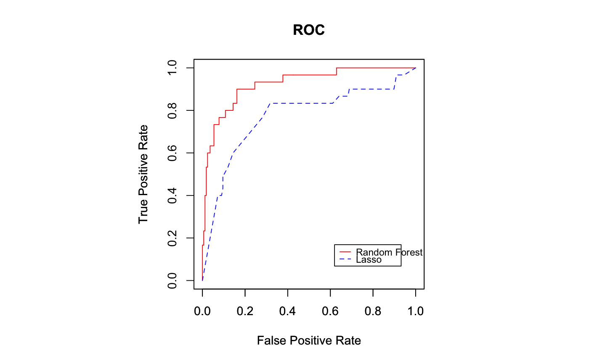
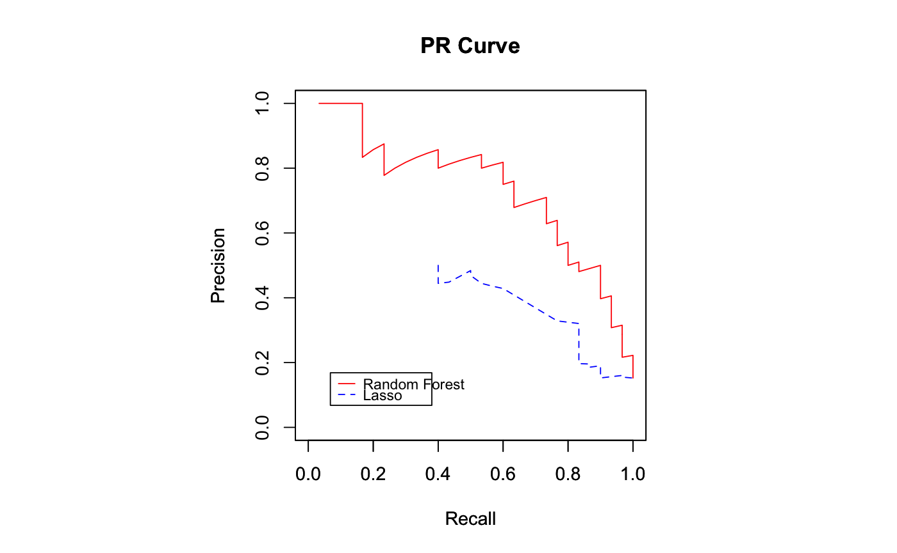

This step allows you to create a Lasso model, based on your data. Lasso is a linear model, best suited for linearly separable data. It's fast to train and often a good starting point.
LassoDevelopment(type, df, grainCol, predictedCol, impute, debug, cores, modelName)
| type | The type of model (either 'regression' or 'classification') |
|---|---|
| df | Dataframe whose columns are used for calc. |
| grainCol | Optional. The dataframe's column that has IDs pertaining to the grain. No ID columns are truly needed for this step. |
| predictedCol | Column that you want to predict. If you're doing classification then this should be Y/N. |
| impute | Set all-column imputation to T or F. If T, this uses mean replacement for numeric columns and most frequent for factorized columns. F leads to removal of rows containing NULLs. Values are saved for deployment. |
| debug | Provides the user extended output to the console, in order to monitor the calculations throughout. Use T or F. |
| cores | Number of cores you'd like to use. Defaults to 2. |
| modelName | Optional string. Can specify the model name. If used, you must load the same one in the deploy step. |
An object of class R6ClassGenerator of length 24.
The above describes params for initializing a new lassoDevelopment class with
$new(). Individual methods are documented below.
Initializes a new lasso development class using the
parameters saved in p, documented above. This method loads, cleans, and prepares data for
model training.
Usage: $new(p)
Trains model, displays feature importance and performance.
Usage:$new()
Returns the predictions from test data.
Usage: $getPredictions()
Returns the ROC curve object for plotROCs. Classification models only.
Usage: $getROC()
Returns the PR curve object for plotPRCurve. Classification models only.
Usage: $getROC()
Returns the area under the ROC curve from testing for classification models.
Usage: $getAUROC()
Returns the RMSE from test data for regression models.
Usage: $getRMSE()
Returns the RMSE from test data for regression models.
Usage: $getMAE()
http://healthcareai-r.readthedocs.io
RandomForestDevelopment
LinearMixedModelDevelopment
selectData
healthcareai
#### Example using iris dataset #### ptm <- proc.time() library(healthcareai) data(iris) head(iris)#> Sepal.Length Sepal.Width Petal.Length Petal.Width Species #> 1 5.1 3.5 1.4 0.2 setosa #> 2 4.9 3.0 1.4 0.2 setosa #> 3 4.7 3.2 1.3 0.2 setosa #> 4 4.6 3.1 1.5 0.2 setosa #> 5 5.0 3.6 1.4 0.2 setosa #> 6 5.4 3.9 1.7 0.4 setosaset.seed(42) p <- SupervisedModelDevelopmentParams$new() p$df <- iris p$type <- "regression" p$impute <- TRUE p$grainCol <- "" p$predictedCol <- "Sepal.Width" p$debug <- FALSE p$cores <- 1 # Run Lasso lasso <- LassoDevelopment$new(p) lasso$run()#> RMSE: 0.34639848 #> MAE: 0.26759093 #> Grouped Lasso coefficients: #> (Intercept) Sepal.Length Petal.Length Petal.Width #> 2.5274566 0.1692443 0.0000000 0.0000000 #> Speciesversicolor Speciesvirginica #> -0.7241716 -0.6554086 #> Variables with non-zero coefficients: Sepal.Length Speciesset.seed(42) # Run Random Forest rf <- RandomForestDevelopment$new(p) rf$run()#> RMSE: 0.33198289 #> MAE: 0.25716023 #> ranger variable importance #> #> Overall #> Petal.Length 100.00 #> Petal.Width 87.04 #> Sepal.Length 31.89 #> Species 0.00cat(proc.time() - ptm,"\n")#> 0.691 0.012 0.684 0 0#### Example using csv data #### library(healthcareai) # setwd('C:/Your/script/location') # Needed if using YOUR CSV file ptm <- proc.time() # Can delete this line in your work csvfile <- system.file("extdata", "HCRDiabetesClinical.csv", package = "healthcareai") # Replace csvfile with '/path/to/yourfile' df <- read.csv(file = csvfile, header = TRUE, na.strings = c("NULL", "NA", "")) head(df)#> PatientEncounterID PatientID SystolicBPNBR LDLNBR A1CNBR GenderFLG #> 1 1 10001 167 195 4.2 M #> 2 2 10001 153 214 5.0 M #> 3 3 10001 170 191 4.0 M #> 4 4 10002 187 135 4.4 M #> 5 5 10002 188 125 4.3 M #> 6 6 10002 185 178 5.0 M #> ThirtyDayReadmitFLG #> 1 N #> 2 N #> 3 N #> 4 N #> 5 N #> 6 Ndf$PatientID <- NULL set.seed(42) p <- SupervisedModelDevelopmentParams$new() p$df <- df p$type <- "classification" p$impute <- TRUE p$grainCol <- "PatientEncounterID" p$predictedCol <- "ThirtyDayReadmitFLG" p$debug <- FALSE p$cores <- 1 # Run Lasso lasso <- LassoDevelopment$new(p) lasso$run()#> Area under the ROC curve is: 0.77 #> Ideal cutoff is 0.17, yielding TPR of 0.83 and FPR of 0.32 #> 95% CI AU_ROC: (0.67 , 0.88) #> #> Area under the PR curve is: 0.30 #> Ideal cutoff is 0.18, yielding Precision of 0.43 and Recall of 0.60 #> #> Grouped Lasso coefficients: #> (Intercept) SystolicBPNBR LDLNBR A1CNBR GenderFLGM #> -3.0095923 0.0000000 0.0000000 0.2102113 0.0000000 #> Variables with non-zero coefficients: A1CNBRset.seed(42) # Run Random Forest rf <- RandomForestDevelopment$new(p) rf$run()#> Area under the ROC curve is: 0.92 #> Ideal cutoff is 0.17, yielding TPR of 0.90 and FPR of 0.16 #> 95% CI AU_ROC: (0.87 , 0.98) #> #> Area under the PR curve is: 0.72 #> Ideal cutoff is 0.33, yielding Precision of 0.71 and Recall of 0.73 #> #> ranger variable importance #> #> Overall #> SystolicBPNBR 100.00 #> A1CNBR 98.62 #> LDLNBR 78.07 #> GenderFLG 0.00cat(proc.time() - ptm,"\n")#> 1.407 0.023 1.342 0 0#### Example using SQL Server data #### This example requires: 1) That you alter #### your connection string / query ptm <- proc.time() library(healthcareai) connection.string <- " driver={SQL Server}; server=localhost; database=SAM; trusted_connection=true " # This query should pull only rows for training. They must have a label. query <- " SELECT [PatientEncounterID] ,[SystolicBPNBR] ,[LDLNBR] ,[A1CNBR] ,[GenderFLG] ,[ThirtyDayReadmitFLG] FROM [SAM].[dbo].[HCRDiabetesClinical] " df <- selectData(connection.string, query)#> Error: nanodbc/nanodbc.cpp:950: IM002: [unixODBC][Driver Manager]Data source name not found, and no default driver specifiedhead(df)#> PatientEncounterID SystolicBPNBR LDLNBR A1CNBR GenderFLG ThirtyDayReadmitFLG #> 1 1 167 195 4.2 M N #> 2 2 153 214 5.0 M N #> 3 3 170 191 4.0 M N #> 4 4 187 135 4.4 M N #> 5 5 188 125 4.3 M N #> 6 6 185 178 5.0 M Nset.seed(42) p <- SupervisedModelDevelopmentParams$new() p$df <- df p$type <- "classification" p$impute <- TRUE p$grainCol <- "PatientEncounterID" p$predictedCol <- "ThirtyDayReadmitFLG" p$debug <- FALSE p$cores <- 1 # Run Lasso lasso <- LassoDevelopment$new(p) lasso$run()#> Area under the ROC curve is: 0.77 #> Ideal cutoff is 0.17, yielding TPR of 0.83 and FPR of 0.32 #> 95% CI AU_ROC: (0.67 , 0.88) #> #> Area under the PR curve is: 0.30 #> Ideal cutoff is 0.18, yielding Precision of 0.43 and Recall of 0.60 #> #> Grouped Lasso coefficients: #> (Intercept) SystolicBPNBR LDLNBR A1CNBR GenderFLGM #> -3.0095923 0.0000000 0.0000000 0.2102113 0.0000000 #> Variables with non-zero coefficients: A1CNBRset.seed(42) # Run Random Forest rf <- RandomForestDevelopment$new(p) rf$run()#> Area under the ROC curve is: 0.92 #> Ideal cutoff is 0.17, yielding TPR of 0.90 and FPR of 0.16 #> 95% CI AU_ROC: (0.87 , 0.98) #> #> Area under the PR curve is: 0.72 #> Ideal cutoff is 0.33, yielding Precision of 0.71 and Recall of 0.73 #> #> ranger variable importance #> #> Overall #> SystolicBPNBR 100.00 #> A1CNBR 98.62 #> LDLNBR 78.07 #> GenderFLG 0.00# Plot ROC rocs <- list(rf$getROC(), lasso$getROC()) names <- c("Random Forest", "Lasso") legendLoc <- "bottomright" plotROCs(rocs, names, legendLoc)#> NULL# Plot PR Curve rocs <- list(rf$getPRCurve(), lasso$getPRCurve()) names <- c("Random Forest", "Lasso") legendLoc <- "bottomleft" plotPRCurve(rocs, names, legendLoc)#> NULLcat(proc.time() - ptm,"\n")#> 1.189 0.02 1.106 0 0